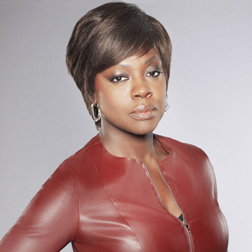

Diversity Works


Why should we care?
Diversity is good for our products
We’ve found that when at least one member of a team has traits in common with the end user, the entire team better understands that user.
Sylvia Ann Hewlett, Melinda Marshall, Laura Sherbin "How Diversity Can Drive Innovation"
Harvard Business Review, December 2013
Robinson Meyer "The Repeated Racism of Snapchat"
The Atlantic, August 13, 2016
One way to prevent these kind of screw-ups is to employ people of color, who can tell you if you’re about to step in it.
Robinson Meyer "The Repeated Racism of Snapchat"
The Atlantic, August 13, 2016
Sidney Fussell "Why Can't This Soap Dispenser Identify Dark Skin?"
Gizmodo, August 17, 2017
Alexis Madrigal "Will the Apple Watch's coolest feature work for people of color?"
The Atlantic, Marc 9, 2015
Like many technology companies, executives form a key early testing team... if people with dark skin do have problems with the watch's heart-rate sensor, none of Apple's top executives would have experienced it.
Alexis Madrigal "Will the Apple Watch's coolest feature work for people of color?"
The Atlantic, Marc 9, 2015
Diversity is good for productivity
When selecting a problem-solving team...a team of randomly selected agents outperforms a team comprised of the best-performing agents.
Lu Hong and Scott E. Page "Groups of diverse problem solvers can outperform groups of high-ability problem solvers."
Michigan Business School and Complex Systems, University of Michigan; and Department of Finance, Loyola University, September 2004
Diversity is crucial to encouraging different perspectives and ideas that foster innovation.
"Global Diversity and Inclusion: Fostering Innovation Through a Diverse Workforce."
Forbes | Insights, July 2011
In research-oriented and hi-tech industries, the broad base of talents generated by a gender-and ethnic-diverse organization becomes a priceless advantage.
Ankita Saxena "Workforce Diversity: A Key to Improve Productivity"
Procedia Economics and Finance, July 2014
Diversity is good for the bottom line
Companies in the top quartile for gender or racial and ethnic diversity are more likely to have financial returns above their national industry medians.
Vivian Hunt, Dennis Layton and Sara Prince "Diversity Matters"
McKinsey Quarterly, February 2015
In 2015, we found that companies in the top quartile for gender diversity were 15 percent more likely to experience above-average profitability...In our expanded 2017 data set this number rose to 21 percent.
Vivian Hunt, Lareina Yee, Sara Prince, and Sundiatu Dixon-Fyle "Delivering through diversity"
McKinsey&Company, January 2018
We found having gender diversity on executive teams, specifically, consistently positively correlated with higher profitability across geographies in our data set.
Vivian Hunt, Lareina Yee, Sara Prince, and Sundiatu Dixon-Fyle "Delivering through diversity"
McKinsey&Company, January 2018
Companies with the most ethnically diverse executives are 33 percent more likely to outperform their peers on profitability.
Vivian Hunt, Lareina Yee, Sara Prince, and Sundiatu Dixon-Fyle "Delivering through diversity"
McKinsey&Company, January 2018
It's the right thing
How does this happen?
The Myth of Meritocracy
Myth:
The most qualified candidate gets the job.
Truth:
Some qualified people never make it to the first round because of unconscious bias.
Kim O'Grady

I made one change that day. I put Mr in front of my name on my CV. ...I got an interview for the very next job I applied for. And the one after that.
Kim O'Grady "How I Discovered Gender Discrimination."
Tumblr, July 2013
What's in a name?
Science faculty’s subtle gender biases favor male students
A November 2012 study by Yale University
Faculty participants rated the male applicant as significantly more competent and hire-able than the (identical) female applicant.
Corinne A. Moss-Racusin, John F. Dovidio, Victoria L. Brescoll, Mark J. Graham, and Jo Handelsman "Science faculty’s subtle gender biases favor male students."
Yale University, November 2012
Racial Bias in Hiring
A November 2002 study by the University of Chicago Graduate School of Business
Applicants with "white-sounding" names were 50 percent more likely to get called for an interview.
The most surprising and disheartening result is seeing that applicants with African-American names were not rewarded for having better resumes.
Marianne Bertrand "Racial Bias in Hiring."
University of Chicago Graduate School of Business, November 2002
"Culture Fit"
Courtney Wilburn
- Lead DevOps engineer at Wirecutter
- 2015 & 2016 White House LGBT Tech & Innovation Fellow
- Talented programmer
- Public speaker and teacher
Courtney Wilburn
The phone and in-person interviews went incredibly well. A few days later, they called saying I was qualified and felt confident I had the ability to perform whatever was required of me, but they felt that I wasn’t a good 'culture fit.'
Courtney Wilburn
I'm incredibly easy-going, so I was mystified by what that meant until I took a second look at the company’s website. If I joined them as a developer, I'd be the only woman there outside of administration, and the only Black person.
The biggest problem is that while we invoke cultural fit as a reason to hire someone, it is far more common to use it to not hire someone.
Katherine Klein "Is Cultural Fit a Qualification for Hiring or a Disguise for Bias?"
Wharton School of the University of Pennsylvania, July 2015
What do you want your company culture to be?

The only way that culture in the workplace is effective is if there are sets of values that help the company achieve its strategy.
Sigal Barsade "Is Cultural Fit a Qualification for Hiring or a Disguise for Bias?"
Wharton School of the University of Pennsylvania, July 2015
Understand
Diversity ≠ Low Quality
Homogeneity = Less Quality
Diversity ≠ Low Quality
Homogeneity = Less Quality
"Diversity hire"
Realize diversity is an asset
Marc Coleman
Founder and president of The Tactile Group, LLC.

When we have to choose among equally qualified candidates, we choose the candidate that will best maintain our culture of diversity.
Right now, we could use the perspective of some cisgender straight white men.
How can we improve diversity?
Improve your job listings
Highly masculine wording used in job postings reduces women’s appeal of the job because it signals that women do not fit or belong in that job.
Stephen Shearman "You Don’t Know It, But Women See Gender Bias in Your Job Postings"
ERE Media, March 2013
Evidence That Gendered Wording in Job Advertisements Exists and Sustains Gender Inequality
A March 2011 study University of Waterloo Department of Psychology
Words not to use
- Ninja
- Rockstar
- Hacker
- Cowboy
- Guys
- Superhero
- Jedi
- Guru
Erin Kissane "Job Listings That Don't Alienate"
"Masculine" themed words
- Ambitious
- Analytical
- Assertive
- Autonomous
- Best of the Best
- Boastful
- Chairman
- Competitive Salary
- Dominate
- Rigid
- Takes Risks
- Hierarchical
"Feminine" themed words
- Adaptable
- Choose
- Collaborate
- Creative
- Curious
- Flexible Schedule
- Multitasking
- Imaginative
- Intuitive
- Self-Aware
- Thoughtful
- Trustworthy
Examine your job interviews.
Melanie Chongolola

The day of my interview, I arrived and the manager took me into his office.
The first thing he said was, ‘After speaking to you on the phone to schedule the interview, I expected somebody white!’.
Interview Questions to Avoid
Sheryl L. Axelrod, Esquire
The Axelrod Firm, PC

Never, under any circumstances, ask interviewees such questions.
If you do, you as an employer are opening yourself up to a discrimination claim.
How old are you?
Do you have children or plan to?
What is your race, color or ethnicity?
What is your religious affiliation?
Are you disabled?
Check local laws
Fight unconscious bias
WWSRD?
Shonda Rhimes...pointedly avoided specifying her characters’ ethnicities, going so far as to leave off last names to help ensure the casting process would be a truly open one.
Nina Shen Rastogi "The tricky business of writing casting notices."
Slate.com, July 2012
Anonymise Your Job Applicants
http://blendoor.com/Diversify Your Vendors
Supplier Diversify
Expand your network
Diverse Chambers of Commerce

Be part of the solution
Support organizations working to fix the problem

National organizations


Help all of your clients be successful
Witchsy
It would take me days to get a response, but Keith could not only get a response and a status update, but also be asked if he wanted anything else or if there was anything else that Keith needed help with.
John Paul Titlow "These Women Entrepreneurs Created A Fake Male Cofounder To Dodge Startup Sexism"
Fast Company, August 29, 2017
Use the power of your words
Avoid default pronouns
Programmer ≠ He
When referring to hypothetical people, use gender neutral pronouns or switch back and forth equally
Liam Dempsey
Director and Designer at lbdesign
Intermixing 'she', 'he' and 'they' in your talks deepens your connection with your audience.
Using a mix of these words encourages people to listen – because you're speaking to their experience, as they are.
Have a wide rage of people in your slides
Avoid homogeneous speaker lineups and panels
Let's fix this!
If people aren’t being included, then I’m going to find a way to make sure they’re included. I’m going to find a way to make sure they have opportunities.
Tracy Levesque
Co-owner, Co-founder YIKES, Inc.
@LilJimmi • yikesinc.com